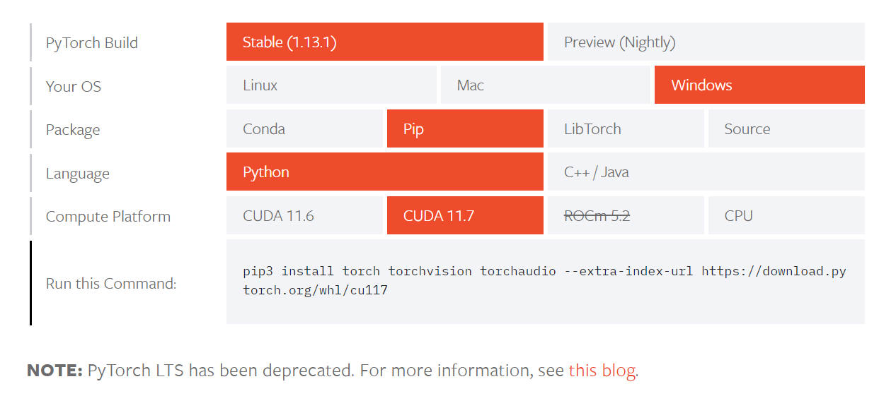
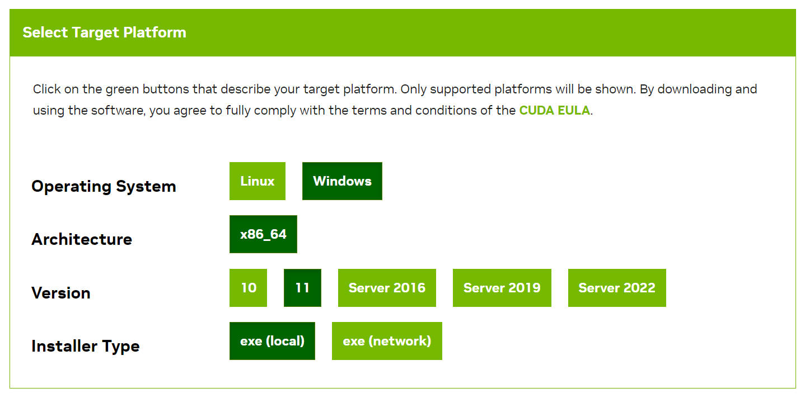
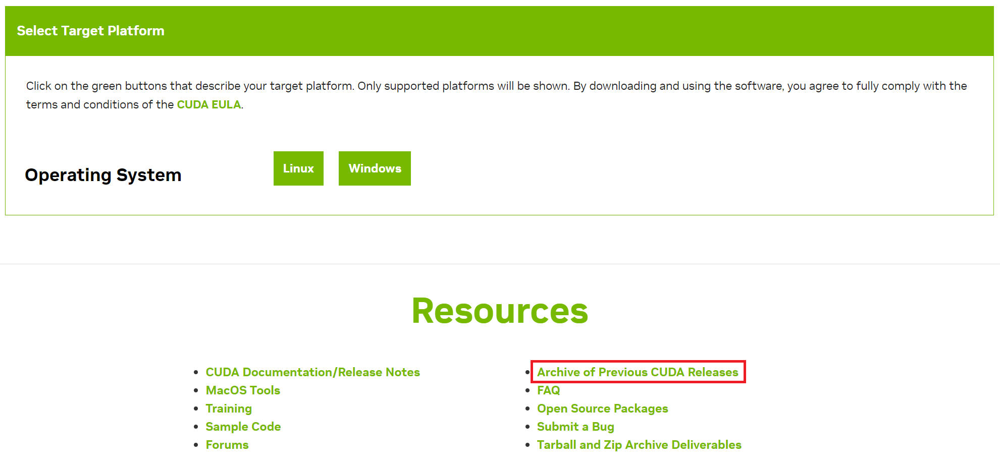
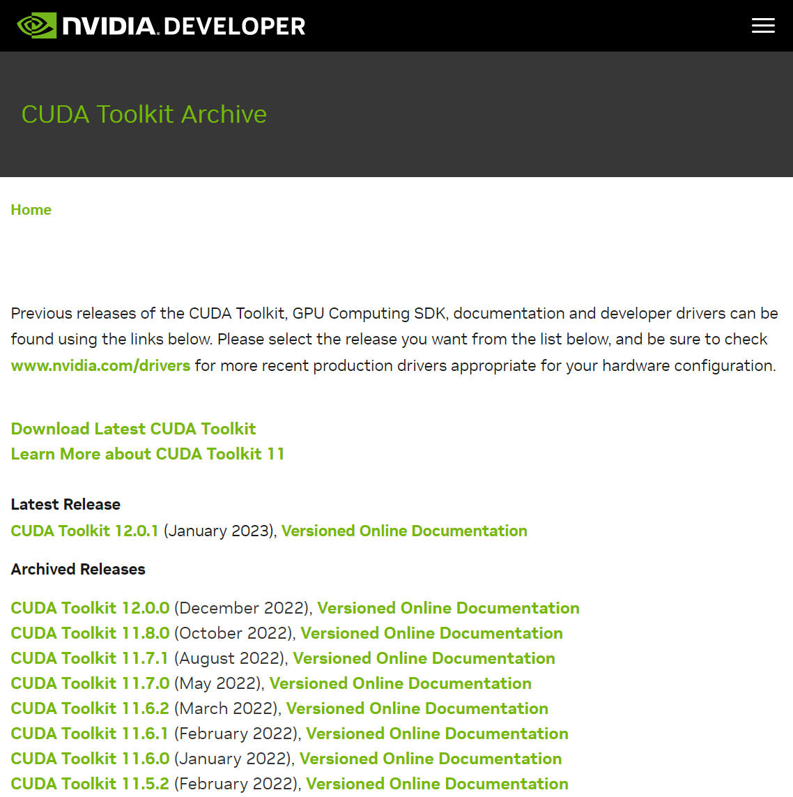
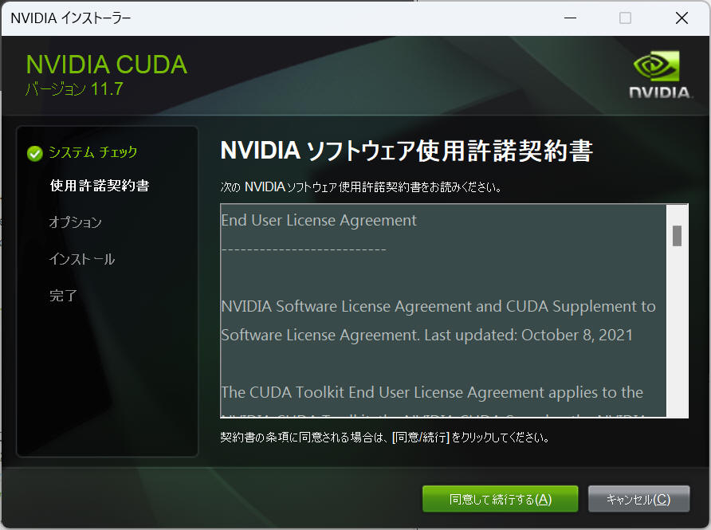
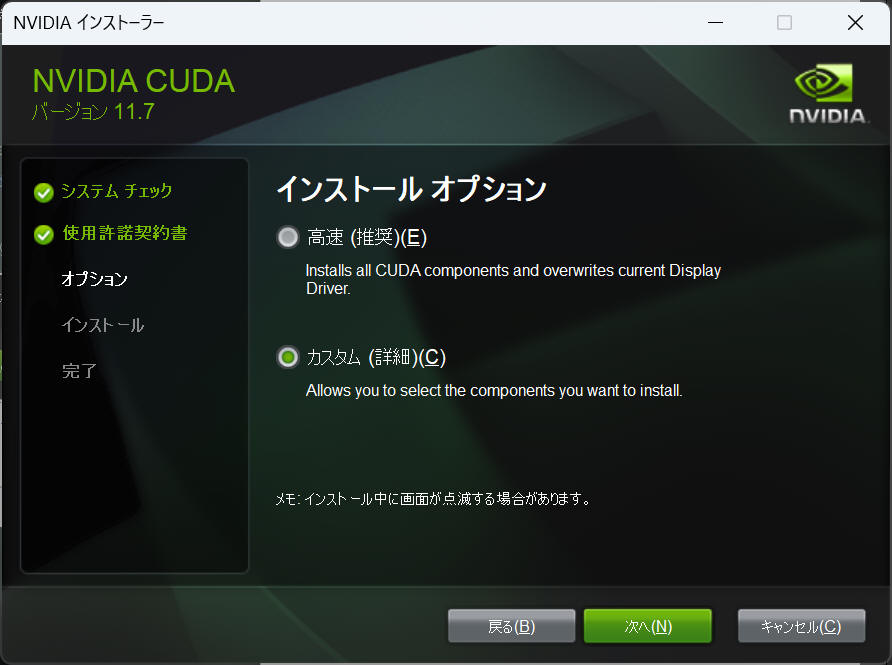
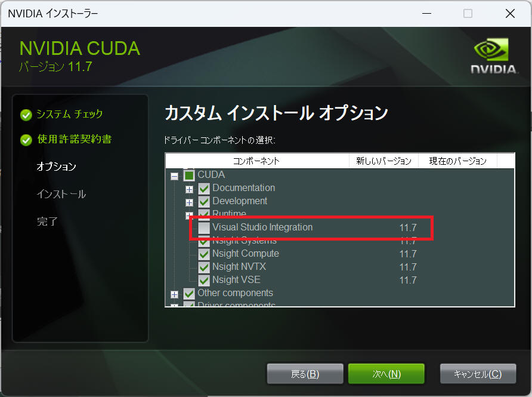
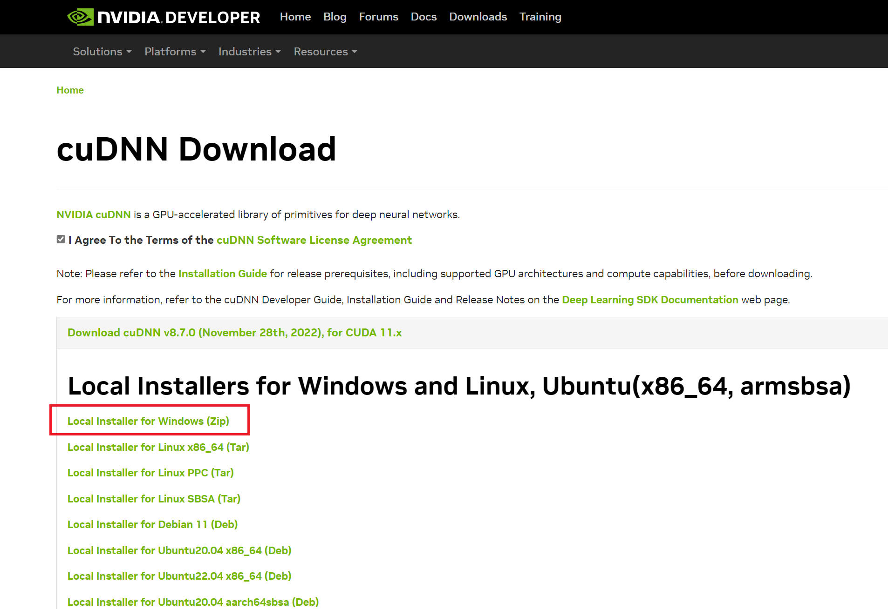

1. Windows
1-1. CPU
[概要]
Windows 環境へ Pytorch をインストールする手順、注意事項、などを本ページにまとめます。
こちらでは "Compute Platform" として "CPU" を選択してインストールする手順について記載します。NVIDIA の GPU など特定のハードウェアを必要としないので、多くの Windows 環境で適用可能です。
[環境]
| OS : | Windows11 home, | 22H2 |
[手順]
(1)
下記URLを開きます。
https://pytorch.org/get-started/locally/
(2)
下図のような画面を表示するので、使用する環境を選択します。ここでは下記項目を選択します。
- PyTorch Build： Stable(1.11.0)
- Your OS： Windows
- Package： Pip
- Language： Python
- Computer Platform： CPU
commandは pip3 install torch torchvision torchaudio となりました。

ちなみに "CUDA 11.3" を選択すると pip3 install torch torchvision torchaudio --extra-index-url https://download.pytorch.org/whl/cu113 となりました。
(3)
表示されたコマンドをコマンドプロンプトなどのターミナルから入力することで Pytorch をインストールします。


これで Pytorch のインストールを完了です。
(4)
インストールされている Pytorch のバージョンを確認したい場合、以下の手順で確認できます。
コマンドプロンプトなどのターミナルから python を起動し、"import torch" した後に "print(torch.__version__)" するだけです。
Microsoft Windows [Version 10.0.22621.1194] (c) Microsoft Corporation. All rights reserved. C:\Users\foo>python Python 3.10.7 (tags/v3.10.7:6cc6b13, Sep 5 2022, 14:08:36) [MSC v.1933 64 bit (AMD64)] on win32 Type "help", "copyright", "credits" or "license" for more information. >>> import torch >>> print(torch.__version__) 1.11.0+cpu >>>
1-2. CUDA
[概要]
Windows 環境へ Pytorch をインストールする手順、注意事項、などを本ページにまとめます。
こちらでは "Compute Platform" として "CUDA" を選択してインストールする手順について記載します。NVIDIA の GPU を必要とします。
[環境]
| OS : | Windows11, | 22H2 |
[手順]
ポイント
Tytorch を GPU(CUDA) 環境としてインストールする場合、下記４つの条件を合わせる必要があります。
・NVIDIA の GPUドライバー
・CUDA toolkit
・cuDNN
・Pytorch
(1) NVIDIA GPU ドライバーインストール、更新
CUDA は NVIDIA社製のGPU環境で使用できます。まずは使用されるPCのGPUドライバを最新版へアップデートしましょう。
"Geforce Experience" をインストールしておくと NVIDIA から新しいドライバーのリリースが自動的に通知されて便利かもしれません。
(2)
"CUDA Toolkit" を Visual Studio と共に使用する人は、先に Visual Studio をインストールしておきます。"CUDA Toolkit" をインストールする際に "Visual Studio Integration" というコンポーネントをインストールしますが、事前に Visual Studio をインストールしておかないと "Visual Studio Integration" のインストールを失敗してしまうからです。
Visual Studio を使用しない人は次へ進みますが、"CUDA Toolkit" をインストールする際に「カスタム インストール オプション」画面のツリーから「CUDA」を展開し、その中にある「Visual Studio Integration」の項目のチェックを外す必要があります。
(3)
下記URLを開きます。
https://pytorch.org/get-started/locally/
"Computer Platform" の欄を確認して、動作する CUDA バージョンを確認します。
下図例だと "CUDA 11.6" または "CUDA 11.7" をインストールする必要があることを意味します。
以下、"CUDA 11.7" をインストールするというシナリオで説明します。

(4) "CUDA Toolkit" をダウンロード
"CUDA Toolkit" をダウンロードします。CUDA Toolkit Downloads | NVIDIA Developer へアクセスします。
最新版をダウンロードする、で良い場合は下図から適切な条件を選択してダウンロードします。

過去のバージョンをダウンロードする場合、画面下段にある Archive of Previous CUDA Releases をクリックすると、過去の "CUDA Toolkit" をダウンロードできるページへ移動します。こちらから目的の OS およびバージョンの "CUDA Toolkit" をダウンロードします。

本例では下記「CUDA Toolkit 11.7.1」をクリックしてインストーラをダウンロードします。

(5) "CUDA Toolkit" をインストール
ダウンロードした "CUDA Toolkit" を実行します。ライセンス条項についての確認があるので、内容を読んで［同意して続行する(A)］をクリックします。

インストールオプションで高速（推奨）とカスタム（詳細）を選択画面になります。
"Visual Studio" をインストールしていない場合、インストールオプションの画面で「カスタム (詳細)(C)」を選択して［次へ(N)］をクリックします。
特に指定をする必要がない場合は［高速 (推奨)(E)］を選んで［次へ(N)］をクリックします。

"Visual Studio" をインストールしていない場合、「カスタム インストール オプション」画面のツリーから「CUDA」を展開し、その中にある「Visual Studio Integration」の項目のチェックを外す必要があります。
チェックを外したら［次へ(N)］をクリックします。

「インストールの場所」はデフォルトで問題ありません。あとは画面の指示に従って［次へ(N)］などをクリックしていきます。
CUDAのインストールが開始して、無事にインストールを完了すると「NVIDIA インストーラーが終了しました」と画面へ表示します。［閉じる］を押して、CUDAのインストールを完了です。
(6) "cuDNN" をインストール
https://developer.nvidia.com/rdp/cudnn-download へアクセスします。NVIDIA へユーザー登録する必要があります。
インストールした CUDA のバージョンによって、ダウンロードするファイルが異なります。最新版の cuDNN ではなく古い cuDNN を欲しい場合は「Archived cuDNN Releases」をクリックしてここから探します。

ダウンロードしたファイルを解凍したら、cuDNN 内の cuda フォルダの中身すべてを任意のフォルダへ保存します。どこでも良いのですが、セットで使用する CUDA フォルダの中にインストールすると管理の都合が良さそうです。ここでは "C:\Program Files\NVIDIA GPU Computing Toolkit\CUDA\11.7\cuDNN" というフォルダを作成してここへコピーすることとします。
(7) PATH を通す
下記５か所のパスを環境変数として登録します。インストーラにより自動的に登録されているものもあるかもしれませんが確認しましょう。
- C:\Program Files\NVIDIA GPU Computing Toolkit\CUDA\v11.7\bin
- C:\Program Files\NVIDIA GPU Computing Toolkit\CUDA\v11.7\libnvvp
- C:\Program Files\NVIDIA GPU Computing Toolkit\CUDA\v11.7\extras\CUPTI\lib64
- C:\Program Files\NVIDIA GPU Computing Toolkit\CUDA\v11.7\include
- C:\Program Files\NVIDIA GPU Computing Toolkit\CUXA\v11.7\cuDNN
これで CUDA のインストールと設定を完了です。
(8)
CUDA のバージョンに合う Pytorch をインストールします。
下記URLを開きます。
https://pytorch.org/get-started/locally/
自分の CUDA バージョンを選択して Pip コマンドを作成します。下図例では
pip3 install torch torchvision torchaudio --extra-index-url https://download.pytorch.org/whl/cu117となりました。
このコマンドをコピペして Pytorch をインストールします。
以上で Pytorch のインストールを完了です。動作確認を行う前に PC を再起動しておきましょう。
(9)
CUDA を有効化できていることを確認します。
コマンドプロンプトなどのターミナルから python を起動し、"import torch" した後に "print(torch.cuda.is_available())" し、結果が "True" となれば成功です。
Microsoft Windows [Version 10.0.22621.1194] (c) Microsoft Corporation. All rights reserved. C:\Users\foo>python Python 3.10.7 (tags/v3.10.7:6cc6b13, Sep 5 2022, 14:08:36) [MSC v.1933 64 bit (AMD64)] on win32 Type "help", "copyright", "credits" or "license" for more information. >>> import torch >>> print(torch.cuda.is_available()) True >>>
"False" となった場合はここまでの内容を再確認しましょう。
(10)
インストールされている Pytorch のバージョンを確認したい場合、以下の手順で確認できます。
コマンドプロンプトなどのターミナルから python を起動し、"import torch" した後に "print(torch.__version__)" するだけです。
Microsoft Windows [Version 10.0.22621.1194] (c) Microsoft Corporation. All rights reserved. C:\Users\foo>python Python 3.10.7 (tags/v3.10.7:6cc6b13, Sep 5 2022, 14:08:36) [MSC v.1933 64 bit (AMD64)] on win32 Type "help", "copyright", "credits" or "license" for more information. >>> import torch >>> print(torch.__version__) 1.13.1+cu117 >>>